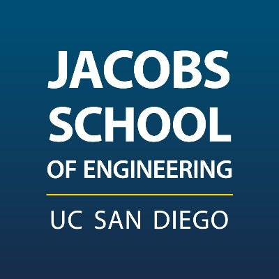
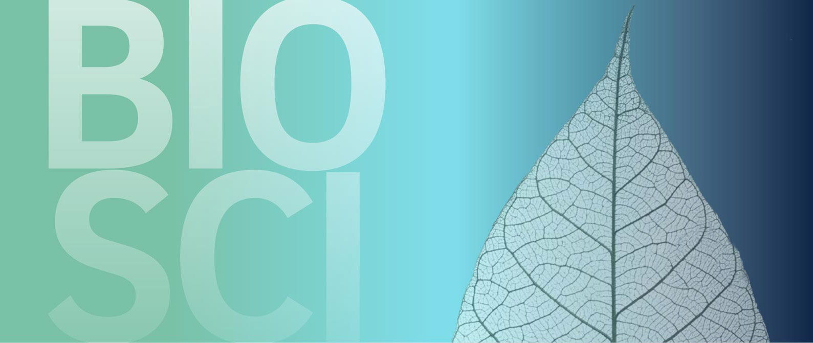
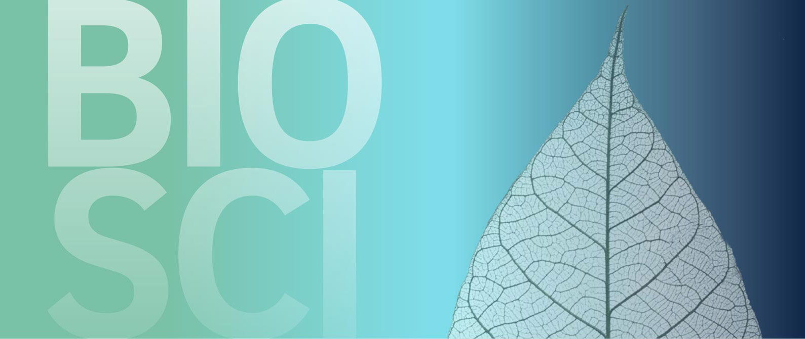
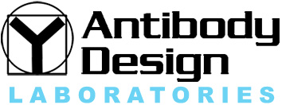
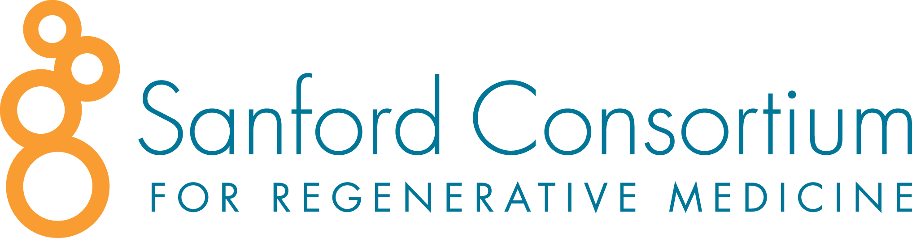

I am a college student studying Human Biology and Computer Science at the University of California, San Diego (UCSD).

 


I am proficient in Python, Java, C, C++, Assembly, HTML, CSS, Javascript, Bootstrap, and Git/Github.
I am proficient in Enzyme Linked Immunosorbent Assay (ELISA), Western Blots, Gel Electorphoresis, Tissue Culturing, Genotyping, Mice Handeling, RNA/Protein Extractions, Mini-Preps, Maxi-Preps, and DNA quantification.
Class: CSE 8A - "Intro to Python Programming" under Leo Porter
- Critiqued code style every week, managed grade porting, late submission logistics, monitored and supported 10-15 students throughout the quarter, offering extra office hours and tutoring help.
- Conduct comprehensive research on current AI applications and trends in the biotech and pharmaceutical industry's regulatory landscape.
- Performed ELISA Immunoassays, Western Blots, cell passaging and maintained mammalian cell lines.
- Spearheaded the execution of a diverse range of molecular biology assays: PCR amplification, bacteria transformation, PCR cleanup, colony screening, and utilization of UV spectrophotometry for DNA quantification.
- Conducted RNA isolation from placental tissue and placental explant culture for EV harvest.

The weather app asks for the user's location to deliver weather updates specific to their whereabouts. Additionally, it can convert temperatures from the default Celsius to Fahrenheit. Furthermore, the app furnishes details such as weather descriptions, icons depicting the current conditions, and the day's highest and lowest temperatures.
click Weather App to see page in full screen